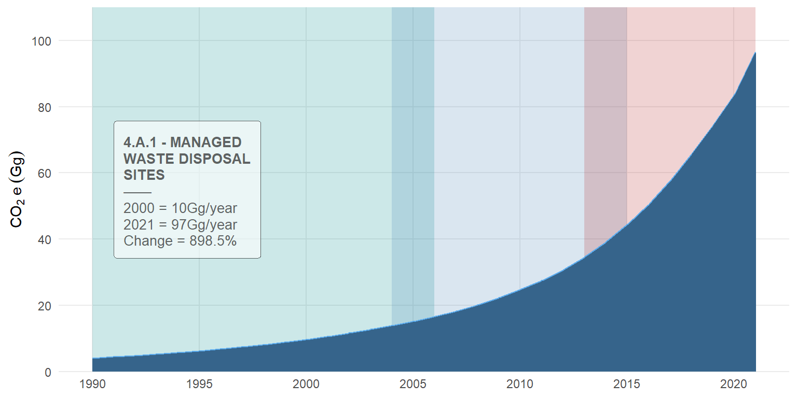
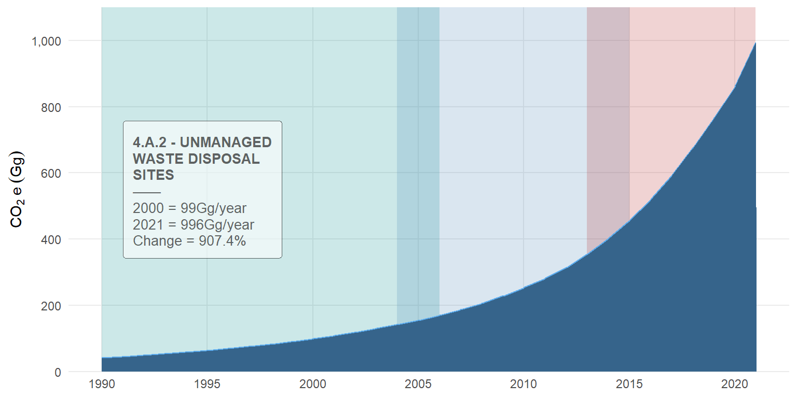

| Trends CO2 equ1 | |
|---|---|
| 4.A - Solid Waste Disposal | |
| 4.B - Biological Treatment of Solid Waste | |
| 4.C - Incineration and Open Burning of Waste | |
| 4.D - Wastewater Treatment and Discharge | |
| 1 Emission from 1990 through 2021. | |
6 WASTE
This chapter focuses on the waste sector, a critical component of national greenhouse gas (GHG) inventories, encompassing a range of activities that contribute to emissions through the management and treatment of waste materials. The waste sector is broadly categorized into four primary sources: solid waste disposal, biological treatment of solid waste, incineration and open burning of waste, and wastewater treatment and discharge (Table 6.1). Each of these categories represents distinct processes that generate emissions of key GHGs, including methane (CH4), carbon dioxide (CO2), and nitrous oxide (N2O), depending on the nature of the waste and the management practices employed.
6.1 Sector overview
The IPCC Guidelines classify waste activities into four primary categories – solid waste disposal; biological treatement of solid waste; incineration and open buring of waste; and wastewater treatement and discharge (IPCC 2006). Solid Waste Disposal is a significant source of methane (CH₄) emissions, resulting from the anaerobic decomposition of organic matter in landfills and dumpsites. IPCC (2006) guideline differentiates between managed landfills – often include gas collection and control systems, and unmanaged or open dumps – lack such measures. Biological Treatment of Solid Waste include biological processes, such as composting and anaerobic digestion, which play a vital role in reducing waste volumes and recovering resources. However, these processes can emit CH4 and N2O. Incineration and Open Burning of Waste contribute primarily to carbon dioxide (CO2) emissions, though incomplete combustion can also generate methane (CH4) and nitrous oxide (N2O).
Wastewater Treatment and Discharge emission arise primarily from the biological degradation of organic matter in domestic and industrial wastewater. Anaerobic conditions in lagoons, septic tanks, and sludge handling facilities can lead to methane (CH4) production, while nitrous oxide (N2O) is generated through nitrification and denitrification processes in wastewater treatment plants. The IPCC guideline categorizing these waste activities enable comprehensive and consistent reporting of emissions, facilitating targeted mitigation efforts and enhancing the accuracy of national GHG inventories. However, for this inventory only category 4.A - Solid Waste Disposal had data for estimation. The remaining were not estimated due to a lack of available data or methodological constraints (Table 6.1). As a result, the assessment in this report primarily present emissions from Solid Waste Disposal, while acknowledging the need for improved data collection and methodologies to evaluate the other categories in future inventories.
6.1.1 Category 4.A.1 - Managed Waste Disposal Sites
In 2021, emissions from the managed waste disposal sites category was 97 Gg CO₂e, representing a nearly ninefold increase (898%) compared to the 10 Gg CO₂e recorded in 2000 (Figure 6.1). This significant rise in emissions highlights the growing impact of waste management practices on greenhouse gas (GHG) emissions over the past two decades. The increase can be attributed to several factors, including rapid urbanization, population growth, and the expansion of waste generation in tandem with economic development. While managed disposal sites are designed to mitigate environmental impacts through measures such as methane recovery and flaring, the substantial growth in emissions underscores the need for enhanced waste management strategies, including improved gas capture technologies, waste reduction initiatives, and the promotion of alternative waste treatment methods such as composting and recycling.

6.1.2 Category 4.A.2 - Unmanaged Waste Disposal Sites
Similar to the trend observed in managed waste disposal sites (Figure 6.1), emissions from unmanaged waste disposal sites have also shown a steady increase over the inventory period (Figure 6.2), albeit at a significantly higher magnitude. In 2021, emissions from unmanaged waste disposal sites was 996 Gg CO2e, representing an increase of more than ninefold (907%) compared to the 99 Gg CO2e recorded in 2000 (Figure 6.2). This substantial rise in emissions underscores the environmental challenges posed by unmanaged waste disposal practices, which are often characterized by open dumpsites lacking gas collection or control systems. The increase can be attributed to factors such as rapid urbanization, population growth, and insufficient waste management infrastructure, which have led to higher volumes of waste being disposed of in unregulated sites.

6.2 Methods – data sources and assumptions
6.2.1 Population Data
Population data is a critical input for estimating municipal solid waste (MSW) generation, as there is a strong correlation between population size and waste production (Mapunda et al., 2023). Studies indicate that as populations grow, the volume of waste generated increases proportionally. The First Order Decay (FOD) Model, as outlined in IPCC Volume 5, Chapter 3, was used to estimate emissions from solid waste disposal sites (SWDS). This model relies on population data and per capita waste generation rates to calculate total MSW. Population data for Tanzania Mainland for the years 1957, 1967, 1978, 1988, and 1994–2021 were obtained from the National Bureau of Statistics (NBS) and the Office of the Chief Government Statistician (OCGS), sourced from national population and housing census reports and population projections. For Zanzibar, population data for 1978, 1988, 1990–2003, 2002, and 2002–2021 were collected from the OCGS through similar reports.
However, there were gaps in population data for the years 1950–1956, 1958–1966, 1968–1977, 1979–1987, and 1989–1993, as population censuses are conducted every 10 years, and no projections were available for these periods. To address these gaps, missing data for 1958–1966, 1968–1977, 1979–1987, and 1989–1993 were estimated using the interpolation method described in IPCC (2006) and detailed in Section 4.7.2 with mathematical formula presented in Equation 4.1. Data for 1950–1956 were generated using backward extrapolation as guided in IPCC (2006). The extrapolation technique used is described in (#sec-recalculation?) with a mathematical formula in Equation 4.2
6.3 Gross Domestic Product (GDP)
The FOD model also requires GDP data and industrial waste generation rates to estimate total industrial waste. UNECE (2006) described that GDP reflects societal production and consumption patterns, which influence resource use and waste generation. GDP data for 1966–1986 and 1992–2021 were obtained from NBS. However, these data had gaps with missing for 1950–1965 and 1987–1991. To address these gaps, missing GDP data for 1950–1965 were estimated using backward extrapolation, following the IPCC guideline (IPCC (2006); Climate Change (IPCC) (2006)). Similarly, data for 1987–1991 were also interpolated (See Section 4.7.2).
6.3.1 Per Capita Waste Generation
Per capita waste generation, measured in kg/capita/year, varies across regions in Tanzania. For Zanzibar, the average per capita waste generation is 4.75 kg/capita/year, while for Tanzania Mainland ranges from 0.55 kg/capita/year (2017) to 0.66–0.95 kg/capita/year (2020). The value of 0.66 kg/capita/year was selected as the representative average for Tanzania Mainland, as it reflects the waste generation patterns of the majority of the population. Available data for Tanzania Mainland and Zanzibar were limited to 2017, 2018, and 2021. To convert daily waste generation rates to annual rates, the values were multiplied by 365 days. Missing data for Tanzania Mainland (1950–2016, 2018, 2019, and 2021) and Zanzibar (1950–2017 and 2019–2021) were filled using surrogate (Equation 4.3), extrapolation (Equation 4.2) and interpolation (Equation 4.1) techniques described in Section 4.7.2.
6.3.2 Percent of Waste Disposed to Solid Waste Disposal Sites (SWDS)
Waste disposed of in SWDS generates greenhouse gases such as methane (CH4), biogenic carbon dioxide (CO2), and non-methane volatile organic compounds (NMVOCs), as well as smaller amounts of nitrous oxide (N~2`O), nitrogen oxides (NOx), and carbon monoxide (CO). CH4 emissions from SWDS contribute approximately 3–4% of global anthropogenic GHG emissions (IPCC, 2001). Data on the percentage of waste disposed of in SWDS were available only for 2021 (Tanzania Mainland) and 2018 (Zanzibar), sourced from the National Environmental Master Plan for Strategic Interventions and the Solid Waste Management Strategy, respectively. Missing data for Tanzania Mainland (1950–2020) and Zanzibar (1950–2017 and 2019–2021) were addressed using Surrogate Method (Equation 4.3) where population data were used as a surrogate to estimate the percentage of waste disposed of in SWDS for 1950–2020 (Tanzania Mainland) and 1950–2017 (Zanzibar). Data for 2019–2021 (Zanzibar) were estimated using extrapolation (Equation 4.2) as guided in IPCC (2006) and Climate Change (IPCC) (2006).
6.3.3 Category-Specific Activity Data Inputs
For the Solid Waste Disposal category, activity data were based on the weight of wet waste collected in 2010, sourced from the United Republic of Tanzania. The emission factor value of 0.09% was used, as specified in the 2019 Refinement to the 2006 IPCC Guidelines (IPCC (2006)) Emission factors for specific waste types were also applied:
- Food Waste: An emission factor of 57% was used, sourced from the 2019 Refinement to the 2006 IPCC Guidelines, Volume 5, Chapter 2, Pages 2.28–2.33.
- Paper and Cardboard: An emission factor of 10.9% was applied, based on the same guidelines.
- Wood Waste: An emission factor of 2.4% was used.
- Textile Waste: An emission factor of 6.7% was applied.
- Metal Waste: An emission factor of 1.9% was used.
These emission factors were selected because they are IPCC default values specific to Tanzania, ensuring consistency and alignment with international reporting standards.
6.3.4 Category-Specific Activity Data Inputs
Category: Solid Waste Disposal data are based on weight of wet waste collected in 2010. The regional condition is from the United Republic of Tanzania, this value was chosen because it is IPCC default value specific for Tanzania. The emission factor value is 0.09 % with reference to 2019 Refinement to the 2006 IPCC Guidelines for National Greenhouse Gas Inventories, Volume 5, Chapter 2, page 2.15-2.27. According to IPCC solid waste emission is categorized as follows:
- Food waste: The emission factor value of 57% was used which was sourced from the 2019 Refinement to the 2006 IPCC Guidelines for National Greenhouse Gas Inventories, Volume 5, Chapter 2, page 2.28-2.33. The value was chosen because it was the IPCC default value specific for Tanzania.
- Paper and Cardboard: The emission factor value used was 10.9% from the 2019 Refinement to the 2006 IPCC Guidelines for National Greenhouse Gas Inventories, Volume 5, Chapter 2, page 2.28-2.33. The value was chosen because it is IPPC default value specific for Tanzania.
- Wood waste: The emission factor value of 2.4% was used. The value was sourced from the 2019 Refinement to the 2006 IPCC Guidelines for National Greenhouse Gas Inventories, Volume 5, Chapter 2, page 2.28-2.33. The value was chosen because it is IPCC default value specific for Tanzania.
- Textile waste: The emission factor value of 6.7% was used as per the 2019 Refinement of the 2006 IPCC Guidelines for the National Greenhouse Gas Inventories, Volume 5, Chapter 2, page 2.28-2.33. The value was chosen because it is IPCC default value specific for Tanzania.
- Metal: The used emission factor value was 1.9% as outlined in the 2019 Refinement to the 2006 IPCC Guidelines for the National Greenhouse Gas Inventories, Volume 5, Chapter 2, page 2.28-2.33. The value was chosen because it is IPCC default value specific for Tanzania.
6.4 Quality assurance and quality control
The national greenhouse gas (GHG) inventory was compiled by a team of experts drawn from various government and non-governmental institutions in Tanzania. The team was composed of wide range of expertize in the taskforcewith extensive experience in waste management and GHG inventory development. The compilation process adhered strictly to the 2006 Intergovernmental Panel on Climate Change (IPCC) Guidelines, ensuring compliance with internationally recognized methodologies and robust quality assurance and quality control (QA/QC) practices.
The data and information used to compile the inventory were sourced from a variety of reliable channels, public datasets that are found online, hard copies of reports, and expert judgments obtained through discussions with national experts. These diverse data sources were carefully reviewed and verified to ensure their accuracy, relevance, and applicability to the subject matter. To further enhance the reliability of the inventory, experts from various waste sectors applied the IPCC Good Practice Guidance, which provided a structured framework for reviewing, integrating, and harmonizing data from different sources in a consistent and accurate manner.
Data and information used to compile the National Inventory Report were accessed from various source including data from online datasets, data from hard copies of reports and expert judgement information from discussions with national experts. All data were verified and reviewed to ensure its accuracy and relevance for the subject matter.
6.5 Description of uncertainties
6.6 Time series consistency issues
6.7 Recalculations
6.8 improvements measures for the Waste Sector
The current greenhouse gas emission inventory for Tanzania’s waste sector faced significant challenges, primarily due to the unavailability of data across various sub sectors outlined in the IPCC software and inconsistencies in records for certain years. Addressing these issues is crucial for enhancing the accuracy and completeness of future inventories, ensuring Tanzania meets its reporting obligations under UNFCCC. Below are proposed measures to enhance the accuracy, reliability and completeness of the inventory.
6.8.1 Development of a Centralized Data Collection and Management System
A key barrier to accurate inventories is the fragmented nature of data collection across different institutions and local governments. Establishing a centralized data management system would streamline this process by consolidating information from various waste management entities. This system would serve as a repository for data on municipal solid waste, industrial waste and wastewater thus allowing for easier access, monitoring and updates. Proposed Approach:
- To develop a national waste data management platform that aggregates inputs from municipal councils, private waste companies and industrial facilities.
- To standardize data submission templates to ensure consistency across all reporting bodies.
- To enable real-time data entry through digital platforms accessible by local authorities and operators.
6.8.2 Comprehensive National Waste Sector Baseline Studies
The absence of comprehensive baseline data hinders the ability to estimate emissions accurately. Conducting national baseline studies will help quantify waste generation rates, characterize waste streams and assess treatment and disposal practices across Tanzania. These studies will also provide insights into sector-specific emission factors. Proposed Approach:
- To partner with academic institutions, research organizations and environmental agencies to conduct sector-wide baseline assessments.
- To collect data from representative regions to ensure variability between urban, peri-urban and rural areas is reflected.
- To focus on waste composition analysis, landfill operations and wastewater treatment facilities to develop localized emission factors.
6.8.3 Capacity Building and Technical Training
Enhancing the technical skills of personnel involved in waste data collection and GHG inventory preparation is essential for improving data quality. There is a need for targeted training on IPCC guidelines, data extrapolation methods and the use of inventory software. Proposed Approach:
- To conduct national and regional training workshops on IPCC 2006 methodologies for waste sector emissions.
- To provide practical training sessions on the use of IPCC inventory tools and emissions modelling software.
- To establish a dedicated team within the National Environmental Management Council (NEMC) responsible for coordinating training programs and offering ongoing technical support.
6.8.4 Strengthening Institutional Coordination and Governance
Lack of clear institutional roles and responsibilities contributes to data gaps and inconsistencies. Strengthening the institutional framework by designating a lead agency to oversee data collection and inventory preparation will improve accountability and coordination. Proposed Approach:
- To assign NEMC or a similar institution the responsibility for leading data collection, validation and inventory preparation.
- To establish a national waste emissions task force involving representatives from local governments, ministries and private sector actors.
- To develop inter-agency data-sharing agreements to facilitate information flow between institutions.
6.8.5 Leveraging Technology for Data Collection and Monitoring
Technological advancements offer innovative solutions to enhance data collection and emission monitoring. Remote sensing, geographic information systems (GIS) and mobile data collection platforms can bridge data gaps and ensure comprehensive coverage. Proposed Approach:
- To utilize GIS to map landfill sites, track waste flows and monitor illegal dumping activities.
- To use drone technology and satellite imagery to estimate the size and operational status of landfill sites.
- To develop mobile applications for municipal and industrial operators to report waste generation, treatment and disposal activities.
6.8.6 Establishing a Review and Updating Framework
A regular review mechanism will ensure that the inventory process evolves in response to new data and emerging best practices. This will enhance transparency, accountability and the overall quality of the inventory. Proposed Approach:
- To establish a timeline for reviewing and updating the waste sector inventory every one to two years.
- To form an advisory committee comprising experts, stakeholders and policymakers to provide guidance on inventory improvements.
- To publish inventory updates and progress reports thereby fostering greater public awareness and engagement in the GHG reporting process.